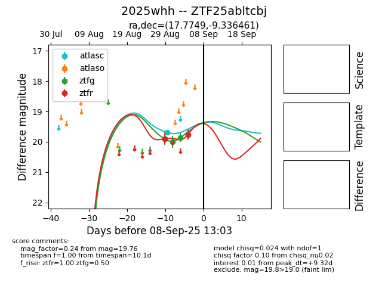

FINK: ZTF25abltcbj
Lasair: ZTF25abltcbj
ALeRCE: ZTF25abltcbj
TNS: 2025whh
YSE: 2025whh
ZTF25abltcbj (ztf,fink)
2025whh (tns,yse)
equatorial (ra, dec) = (17.7749,-9.33646)
galactic (l, b) = (138.4791,-71.61224)

last atlasc=19.70, ztfg=19.86, ztfr=19.76
1 atlasc, 3 ztfg, 2 ztfr detections